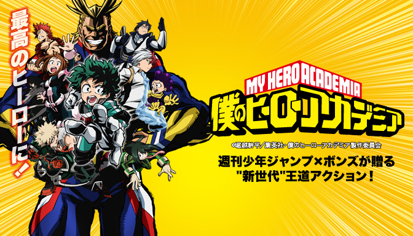
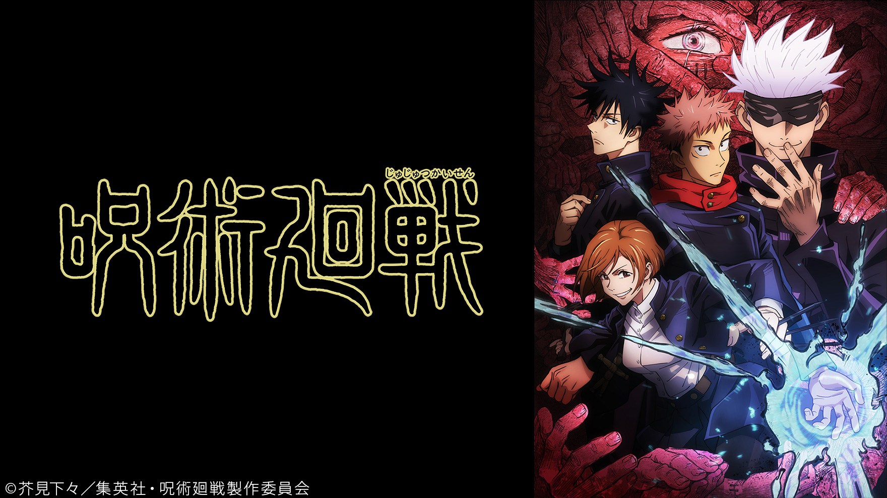
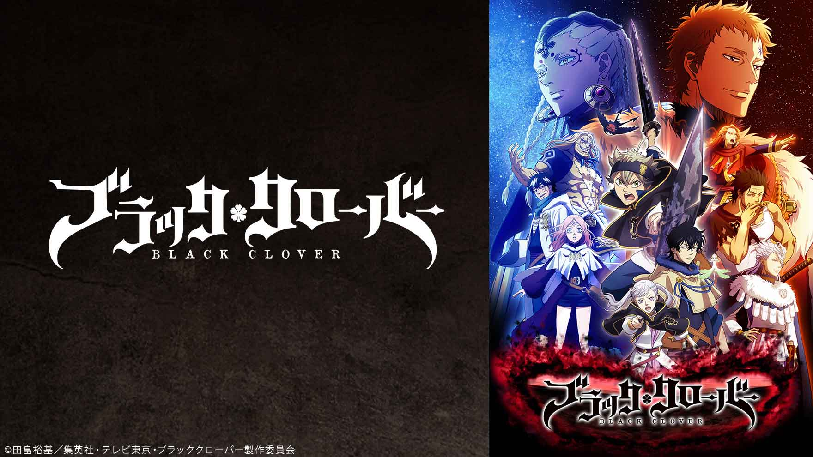

バトル・戦闘系
僕のヒーローアカデミア

あらすじ
超常能力“個性”を持つ人間が当たり前の世界。憧れのNo.1ヒーロー・オールマイトと出会った“無個性”の少年・緑谷出久、通称「デク」は、その内に秘めるヒーローの資質を見出され、オールマイトから“個性”ワン・フォー・オールを受け継いだ。デクはヒーロー輩出の名門・雄英高校に入学し、“個性”で社会や人々を救ける“ヒーロー”になることを目指し、ヒーロー科1年A組のクラスメイトたちと切磋琢磨する毎日を過ごしていた。
キャスト
緑谷 出久：山下 大輝 爆豪 勝己：岡本 信彦 麗日お茶子：佐倉 綾音飯田 天哉：石川 界人 轟 焦凍 ：梶 裕貴 耳郎 響香：真堂 圭
芦戸 三奈：喜多村英梨 切島鋭児郎：増田 俊樹 蛙吹 梅雨：悠木 碧
八百 万百：井上麻里奈 常闇 踏陰：細谷 佳正 上鳴 電気：畠中 祐
物間 寧人：天﨑 滉平 鉄哲 徹鐵：沖野 晃司 拳藤 一佳：小笠原 早紀
心操 人使：羽多 野渉 相澤 消太：諏訪部順一 ホークス ：中村 悠一
エンデヴァー：稲田 徹 オールマイト：三宅健太
感想
この作品は、一言でいうと飽きない作品です。
最初は無個性で落ちこぼれだったデクが雄英高校ヒーロー科に入って切磋琢磨し成長していく姿がかっこよく、
また、普通の高校のような行事をヒーロー科ならではの内容がありとても面白いです。
この作品ではヴィラン（敵）が出てくるのですがヴィランとヒーローとの戦いがものすごく、なかでもやはり
No.1ヒーロー・オールマイトの圧倒的実力と不屈の精神がかっこいいです！
男女問わず見れる作品だと思うのでぜひ見てみてください
呪術廻戦

あらすじ
辛酸・後悔・恥辱
人間が生む負の感情は呪いと化し日常に潜む
呪いは世に蔓延る禍源であり、最悪の場合、人間を死へと導く
そして、呪いは呪いでしか祓えない
驚異的な身体能力を持つ、少年・虎杖悠仁はごく普通の高校生活を送っていたが、
ある日“呪い”に襲われた学友を救うため、特級呪物“両面宿儺の指”を喰らい、己の魂に呪いを宿してしまう
呪いである“両面宿儺”と肉体を共有することとなった虎杖は、最強の呪術師である五条 悟の案内で、対呪い専門機関である「東京都立呪術高等専門学校」へと編入することになり……
呪いを祓うべく呪いを宿した少年の後戻りのできない、壮絶な物語が廻りだす―
キャスト
虎杖 悠仁：榎木 淳弥 伏黒 恵 ：内田 雄馬 釘崎野薔薇：瀬戸麻沙美禪院 真希：小松未可子 狗巻 棘 ：内山 昂輝 パンダ ：関 智一
東堂 葵 ：木村 昴 加茂 憲紀：日野 聡 西宮 桃 ：釘宮 理恵
禪院 真依：井上麻里奈 三輪 霞 ：赤﨑 千夏 究極メカ丸：松岡 禎丞
五条 悟 ：中村 悠一 夜蛾 正道：黒田 崇矢 七海 建人：津田健次郎
伊地知潔高：岩田 光央 家入 硝子：遠藤 綾 庵 歌姫 ：日笠 陽子
楽巌寺嘉伸：麦人 夏油 傑 ：櫻井 孝宏 漏瑚 ：千葉 繁
花御 ：田中 敦子 吉野 順平：山谷 祥生 真人 ：島﨑 信長
両面 宿儺：諏訪部順一
感想
このアニメは1話から面白い作品です。この作品は絵がすごく、特に戦闘シーンは迫力満点でした！
独特な世界観と怖そうな名前のアニメですが、実際”呪い”というものが出てくるので初めて見る方は
気を付けてください。鬼滅の刃や進撃の巨人を見たことがある人は平気なのでぜひご覧ください！
ブラッククローバー

あらすじ
――魔法がすべての、とある世界――
主人公’アスタ’と’ユノ’は同じ日に最果ての村の教会に捨てられていた。この二人は”魔法帝”になるために
日々精進しているのだがアスタはまったく魔力がない体質で周りからは無理だと言われていた。
しかし、アスタはあきらめることを知らず人一倍努力し成長していくのであった…
キャスト
アスタ： 梶原岳人ユ ノ： 島﨑信長
ノエル： 優木かな
ヤ ミ： 諏訪部順一
感想
最初は周りから無理だと言われていたが、長い年月努力しているうちに応援されるようになっていき 魔力がすべての世界で魔力の’まったくない’アスタがどんどん成長していく姿が見ていて面白いです。 １期しかやっていないが話数が多く170近くあり、結構先まで見られるので長い間楽しめると思います！